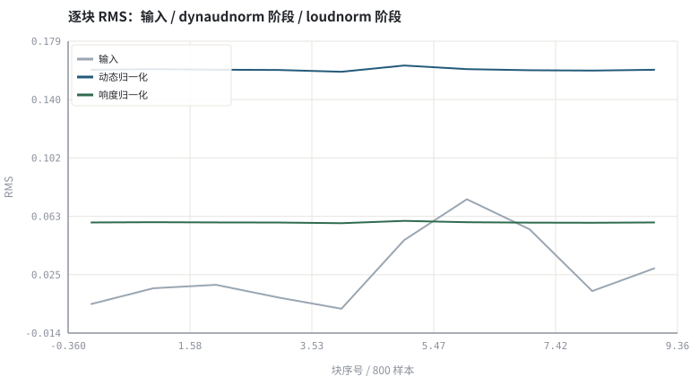
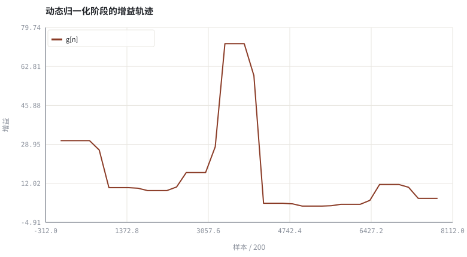

第 17 章ffmpeg / WebRTC / SpeexDSP 工具链实操
把书里的公式映射到能在本机敲的命令与能读的源码目录。
本章位置：第 16 章 · 3A 级联顺序与模块间相互干扰 定下链路顺序，本章把每个模块落到可敲的命令与可读的源码；第 18 章 · 上卷综合实验：完整传统 3A 链路与评测 用统一指标对整条上卷链路做综合验收。
ffmpeg 的 -af 是一条 shell 管道，WebRTC 是一个有状态的流处理器：前者处理文件，后者处理 10 ms 一帧的无限流，二者的数据结构与延迟约束完全不同。
- 能用 `ffmpeg -filters` 自查本机支持的音频滤镜及版本。
- 能把 3A 的三类任务映射到具体 ffmpeg 滤镜与参数。
- 能定位 WebRTC audio_processing 与 SpeexDSP 的源码目录。
- 能说明离线滤镜链与实时 3A 链路的本质差别。
§知识点地图
每个知识点都配了 1～2 个扩展学习链接；本章完整资源清单见 扩展学习。
| # | 知识点 | 扩展学习 | 状态 |
|---|---|---|---|
| 1 | 滤镜自查与版本 | FFmpeg Filters 文档 ↗ · ffmpeg arnndn ↗ | 正文已覆盖 |
| 2 | afftdn / anlmdn / arnndn | Cooley–Tukey FFT ↗ · Python 标准库文档 ↗ | 正文已覆盖 |
| 3 | loudnorm / dynaudnorm / speechnorm | FFmpeg Filters 文档 ↗ · ffmpeg arnndn ↗ | 正文已覆盖 |
| 4 | ebur128 / astats / volumedetect | FFmpeg Filters 文档 ↗ · ffmpeg arnndn ↗ | 正文已覆盖 |
| 5 | WebRTC audio_processing | WebRTC 源码（audio_processing） ↗ · WebRTC AEC3 模块 ↗ | 正文已覆盖 |
| 6 | AEC3 源码目录 | Echo cancellation ↗ · ITU-T G.168 ↗ | 正文已覆盖 |
| 7 | SpeexDSP 接口 | FFmpeg Filters 文档 ↗ · ffmpeg arnndn ↗ | 正文已覆盖 |
| 8 | 离线与实时链路差异 | RFC 3550 RTP ↗ · WebRTC 官网 ↗ | 正文已覆盖 |
§17.1先自查，再谈版本
用户常问「ffmpeg 某版本里有没有某个能力」。可靠的回答方式不是背版本号，而是给一条自查命令：编译选项不同，同一版本号支持的滤镜也可能不同。本书所有命令都遵循「先用本机输出确认、再查官方文档」的口径。
| 任务 | 常用滤镜 / 入口 | 备注 |
|---|---|---|
| 噪声抑制 | afftdn、anlmdn、arnndn | arnndn 需自备 RNNoise 训练出的模型文件 |
| 增益 / 响度 | dynaudnorm、speechnorm、loudnorm、acompressor、alimiter | loudnorm 对应 EBU R128；alimiter 做真峰值保护 |
| 测量 | volumedetect、astats、ebur128、silencedetect | ebur128 输出 I / LRA / True Peak |
| 造测试数据 | aecho、aresample、anoisesrc | aecho 可叠加延迟衰减副本 |
| 工业 3A | WebRTC modules/audio_processing | AEC3 / NS / AGC2 的参考实现 |
§17.2离线滤镜链 ≠ 实时 3A
ffmpeg: 文件 → -af 滤镜链 → 文件 ；WebRTC: 10 ms 帧 → 有状态处理 → 10 ms 帧
- 参考信号：ffmpeg 的滤镜链没有 AEC 所需的第二路输入；真正做回声消除要用带参考的实现（WebRTC AEC3、SpeexDSP）。
- 状态：实时模块必须逐帧携带状态（滤波器权重、噪声功率、增益包络），离线滤镜可以读全文件做 two-pass。
- 延迟：实时链路按 10 ms 帧预算，任何「看未来」的归一化都要删掉或改成因果版本。
ffmpeg 各滤镜的引入版本、参数名与默认值可能随版本变化。请以 ffmpeg -version、ffmpeg -filters、ffmpeg -h filter=NAME 与 https://ffmpeg.org/ffmpeg-filters.html 为准；本书与这些项目无从属关系，也不构成产品推荐。
§Python 实验
实验 17-1 · 用 Python 复刻一条离线滤镜链的电平报告
#!/usr/bin/env python3
# -*- coding: utf-8 -*-
"""模拟 volumedetect/astats → dynaudnorm → loudnorm 三阶段，打印可核对的电平报告。
全部语音 / 噪声 / 房间冲激响应均为代码合成信号，仅用于教学演示机制与量级。
"""
from __future__ import annotations
import math
import pathlib
import random
import statistics
import sys
import time
_here = pathlib.Path(__file__).resolve()
for _p in _here.parents:
if (_p / "tools" / "dsp.py").exists():
sys.path.insert(0, str(_p / "tools"))
break
from dsp import (SAMPLE_RATE, fft, hann, stft, istft, magnitude_db, spectrum,
white_noise, tone, chirp, synthetic_speech, rir, convolve,
fft_convolve, delay, clip, normalize_peak, rms, rolling_rms,
smooth, db, energy_db, snr_db, erle_db, seg_snr_db,
scale_align, si_sdr_db, lufs_approx,
write_wav, read_wav, wav_info)
from chart import Chart, heatmap, BLUE, RED, GREEN, AMBER
FIG = _here.parents[1] / "fig"
AUDIO = _here.parents[1] / "audio"
FIG.mkdir(exist_ok=True)
AUDIO.mkdir(exist_ok=True)
random.seed(7)
# ---- 参数区 ----
N = 8000
WIN = 800
TARGET_LUFS = -23.0
MAX_GAIN = 4.0
MAX_DYN_GAIN = 80.0 # 动态归一化增益上限：太小则弱段抬不动
ATK, REL = 0.20, 0.20 # 增益平滑的攻击/释放系数
# ---- 计算与作图 ----
rng = random.Random(7)
base = synthetic_speech(rng, N)
level = [0.25 if i < N // 2 else 1.0 for i in range(N)]
x = [0.35 * base[i] * level[i] for i in range(N)]
peak = max(abs(v) for v in x)
mean_db = 20 * math.log10(rms(x) + 1e-12)
peak_db = 20 * math.log10(peak + 1e-12)
blocks = [rms(x[s:s + WIN]) for s in range(0, N, WIN)]
g_block = [min(MAX_DYN_GAIN, 0.16 / (b + 1e-6)) for b in blocks]
raw_g = [g_block[min(i // WIN, len(g_block) - 1)] for i in range(N)]
g = smooth(raw_g, ATK, REL)
dyn = clip([x[i] * g[i] for i in range(N)])
l0 = lufs_approx(dyn)
gain = min(MAX_GAIN, 10 ** ((TARGET_LUFS - l0) / 20.0))
norm = clip([v * gain for v in dyn])
l1 = lufs_approx(norm)
blocks_after = [rms(norm[s:s + WIN]) for s in range(0, N, WIN)]
c = Chart(FIG / "17-levels.svg", "逐块 RMS：输入 / dynaudnorm 阶段 / loudnorm 阶段",
xlabel="块序号 / 800 样本", ylabel="RMS")
c.line(range(len(blocks)), blocks, "#9aa6b2", label="输入")
c.line(range(len(blocks)), [rms(dyn[s:s + WIN]) for s in range(0, N, WIN)], BLUE, label="动态归一化")
c.line(range(len(blocks_after)), blocks_after, GREEN, label="响度归一化")
print("电平图:", c.save())
b = Chart(FIG / "17-gain.svg", "动态归一化阶段的增益轨迹", xlabel="样本 / 200", ylabel="增益")
b.line(range(0, N, 200), [g[i] for i in range(0, N, 200)], RED, label="g[n]")
print("增益图:", b.save())
write_wav(AUDIO / "17-input.wav", normalize_peak(x))
write_wav(AUDIO / "17-normalized.wav", norm)
print("volumedetect 口径: mean_volume=%.2f dB max_volume=%.2f dB" % (mean_db, peak_db))
print("astats 口径: 分块 RMS 前 %.4f~%.4f (%.1f×) 后 %.4f~%.4f (%.1f×)" %
(min(blocks), max(blocks), max(blocks) / max(min(blocks), 1e-9),
min(blocks_after), max(blocks_after), max(blocks_after) / max(min(blocks_after), 1e-9)))
print("ebur128 口径(教学近似): LUFS %.2f -> %.2f | 二遍增益=%.3f | SAMPLE_RATE=%d" %
(l0, l1, gain, SAMPLE_RATE))操作：对照打印的 mean_volume / max_volume / LUFS 与图上曲线；把结果作为 ffmpeg 命令的预期值。 预期与判读：动态归一化先压平块间电平，响度归一化再整体平移到目标响度附近。本书 lufs_approx() 只是教学近似，不能代替合规的 ebur128 测量。
改参数看趋势：把 TARGET_LUFS 改成 -16，观察二遍增益与最终电平如何变化。 文件位置：part3/17-toolchain/code/17-toolchain.py


17-input.wav
前半轻后半响的输入（16 kHz / 16-bit 单声道，代码合成信号，不是真实录音）
17-normalized.wav
两级归一化后的输出（16 kHz / 16-bit 单声道，代码合成信号，不是真实录音）
代码块右上角可一键复制；仓库里的 code/*.py 由 tools/extract_code.py 从这些代码块自动抽取。脚本只用标准库、固定 random.seed(7)，运行后写出 fig/*.svg 与 audio/*.wav；批量运行用 ./tools/run_python.sh。
§可选真机命令片段
以下命令不参与批量运行，需要本机自行安装对应工具。滤镜是否可用取决于本机 ffmpeg 版本与编译选项，请先用 ffmpeg -filters / ffmpeg -version 自查，并以 https://ffmpeg.org/ffmpeg-filters.html 与各自官方文档为准；本书不假定任何特定版本具备某项能力。
自查本机 ffmpeg 版本与 3A 相关滤镜
ffmpeg -hide_banner -version | head -3 && ffmpeg -hide_banner -filters | grep -E 'afftdn|anlmdn|arnndn|loudnorm|dynaudnorm|speechnorm|ebur128|astats|volumedetect|aecho|aresample|acompressor|alimiter'说明：是否列出某滤镜取决于本机版本与编译选项；本书不假定任何特定版本。参数细节用 `ffmpeg -h filter=NAME`，权威说明见 https://ffmpeg.org/ffmpeg-filters.html 。
离线三阶段滤镜链（对照实验 17-1 的 Python 版本）
ffmpeg -hide_banner -i input.wav -af volumedetect -f null - 2>&1 | grep -E 'mean_volume|max_volume' && ffmpeg -hide_banner -i input.wav -af dynaudnorm,ebur128=peak=true -f null - 2>&1 | tail -12说明：第一条给电平报告，第二条做动态归一化并输出响度测量；滤镜可用性以本机 `ffmpeg -filters` 与官方 Filters 文档为准。
定位 WebRTC 的 3A 源码入口
git clone --depth 1 https://webrtc.googlesource.com/src webrtc-src && ls webrtc-src/modules/audio_processing/说明：audio_processing 下含 aec3、ns、agc2 等子目录；也可直接在 https://webrtc.googlesource.com/src/+/refs/heads/main/modules/audio_processing/ 在线浏览。
§本章参考资料
按本章知识点挑选的精读资料；更多检索入口见 扩展学习。
§常见误区
- 照抄网上命令，不先查本机是否编译了对应滤镜。
- 把 ffmpeg 的离线归一化结果当成实时 AGC 可用。
- 以为 ffmpeg 内置完整 AEC（它需要远端参考，不是单路滤镜）。
- 用 lufs_approx 之类的近似值做播出合规判定。
§习题与思考
- 写出三条自查命令，判断本机能否运行 arnndn 与 loudnorm。
- 解释为什么 AEC 不能写成单输入 -af 滤镜。
- 把实验 17-1 的三阶段映射到具体 ffmpeg 滤镜名。
§扩展学习
继续检索
- Google Scholar：ffmpeg audio filters WebRTC audio processing CLI ↗
- arXiv：ffmpeg audio filters WebRTC audio processing CLI ↗
- GitHub：ffmpeg audio filters WebRTC audio processing CLI ↗
全书链接总表见 FFmpeg Filters 文档 ↗ 与 附录 A.7；滤镜是否可用请以本机 ffmpeg -filters 为准。
§延伸阅读与内链
- 第 18 章 · 上卷综合实验：完整传统 3A 链路与评测 上卷综合评测；第 23 章 · 神经噪声抑制：从 RNNoise 到 DNS Challenge RNNoise 与 arnndn；第 28 章 · 延迟预算与 RTF：实时链路账本 实时延迟预算。